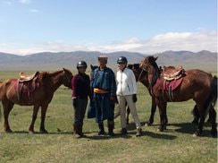

Panthea Heydari (PH): You seem to have a lot of different interests: You’re working with individuals with Alzheimer’s Disease, children on the Autism Spectrum…what would you say is the focus of your lab? Susan Bookheimer Susan Bookheimer (SB): I’ve focused on developing brain imaging techniques to be used on clinical populations. I work with a lot of different clinical populations (Alzheimer’s, Autism, ADHD, dyslexia, brain tumor patients, epilepsy). The idea is not to focus on a particular disorder, but, instead, to focus on making techniques appropriate for clinical evaluation, both for basic research and to help patients. PH: Have you always been interested in neuroimaging or is this something you transitioned into from another field? SB: It was one of those things that I accidentally happened upon. I was an epilepsy specialist and conducting neuropsychology of epilepsy research at the National Institute of Health (NIH). I happened to be there when they had a PET scanner (before fMRI existed). The NIH was one of the few places that had the capability to do water PET (activation PET) studies. Since I was working with epilepsy, we used PET for presurgical planning and language mapping. Soon, we had a MRI scanner where we could do very primitive, but effective, fMRI evaluations and that was it- I was hooked after that! PH: That sounds like it was an amazing time to be at the NIH! SB: Oh, it was incredible! There were amazing people there: the great Denis Le Bihan, who did the first diffusion scans, Bob Turner, who was instrumental in understanding the BOLD effect, and Peter Jezzard, among others. Since the techniques were just coming out, everything was being developed in real time, so it was very exciting! PH: Can you please tell us a bit about your career path before and after the NIH? SB: I spent one year at Smith College and two years at Cornell, where I studied psychology. I went to graduate school at Wayne State University in Detroit, which, at the time, was one of only three universities in the country that had a Clinical Psychology PhD Program with a specialty in Neuropsychology. I completed my internship at Yale with a focus on the Neuropsychology of Epilepsy and then was a post-doc for four years at the Epilepsy Center at the NIH. I came to UCLA afterward and have been here ever since.
PH: What are some questions that you think neuroimaging allows us to answer about the brain that we are unable to answer otherwise? What do you think is the most interesting advance you’ve learned through neuroimaging?  SB: I’d say it must be the complexity of systems that we had previously thought to be simple, i.e. systems that we understood based on watching patients experience a stroke. Prior to functional imaging, we had to wait for someone to get a stroke in a specific location, determine that location, determine what that person could no longer do, and then deduce what that brain area should do based on what the patient could no longer do. It’s a very roundabout way of trying to understand the brain and it led to very oversimplified maps- even maps is too generous a word—a very oversimplified understanding of the brain systems. I was particularly interested in language and memory at the time; where, initially, we thought we could use functional imaging to find the two common language areas: Broca’s area and Wernicke’s area. We quickly realized the language system was way more complicated than we had ever imagined. PH: So maybe it’s like a starting point that we can continue to learn from… SB: Yes, and it turns out that we have an awful lot to learn! PH: Do you find that you still have the same level of passion now for science and imaging techniques that you did when you were first starting out? How has it changed over the years? SB: I certainly have as much interest and passion for it now as I ever did. Back then, I spent a lot more time in the scanner. When we were conducting PET research, we took turns delivering the ligand to the patient (to share the radioactivity), and in the MRI, I was always either in or near the scanner. Back then, it was much more hands on and analysis software was just starting out too. There’s a tremendous amount of excitement in being right there when it’s happening! Unfortunately, that’s something I don’t really have the luxury to do anymore--I definitely miss it. Now, I spend more time trying to fund the lab, make sure the grants get written, and I do a lot of administrative work--but that’s not nearly as fun. I’d say my excitement for the science is completely undiminished but I spend lesser time doing the science than I used to then. PH: What is your greatest scientific achievement? SB: I would say my greatest scientific achievement was the first project that we completed which ultimately developed into the field of imaging genetics. We investigated a common polymorphism, APOE-4, a risk gene for Alzheimer’s Disease, in normal population and showed that normal volunteers who differ in their possession of the risk polymorphism had different brain activation patterns. This was my initial foray into a different way of examining the brain. Integrating the imaging and genetics together was my biggest accomplishment, even though it was a long time ago. PH: What is your greatest non-scientific achievement? SB: My children. I have two wonderful kids. They are my greatest achievements. PH: Do they also share your passion for science? SB: In their own way. My daughter ended up working with children with autism; autism research is one of my focuses. My son is interested in computers and information technology. Both my kids ended up having a scientific mind. PH: Did you integrate the sciences into their day-to-day life? SB: Science has been a big part of their day-to-day life since they were born. Their father and I both work here at UCLA and are both imaging scientists, so our lives were always surrounded by science. Science was very much part of my children’s upbringing. PH: You were at OHBM 2016 in Geneva. How did you like it? SB: It was awesome! I was initially nervous because I gave one of the keynotes, so I spent the first couple of days obsessing over my slides. I think the meetings are getting better, the science is getting better, the technology is getting better. I love OHBM. PH: Is there anything you’ve heard or seen at the conference that has changed or influenced your work? SB: I think the main things that I try to do, particularly at OHBM, is to be apprised of the newest techniques in acquisition and analysis. I don’t even know if I can point to one thing because there are just so many! If I could say one thing, it would be graph theory. We’ve been using graph theory for some time but to find new ways to conceptualize connectivity in the brain was a major change in the direction of imaging, evidenced by Bill Seeley’s keynote. Watching those techniques develop and seeing them at OHBM has been exciting. Most of our work now has a component of connectivity and use of graph theory. PH: What do you think is the best piece of scientific advice that someone has given you? SB: This is more like personal advice, but very early in my career, I was writing my first papers and feeling terribly anxious. This concept is particularly a problem for women who are not raised with natural self confidence. At this time, I contacted a friend of mine who had been publishing and asked her, “how do you get over the barrier of being so self-conscious about your work that you can write freely?” She said “I send my papers out to the scariest people I know before I send them out for publication. I figure that if I can take the criticism of the big name people in the field who scare me, then I will be okay”. So, I took her advice and that’s what I did. I sent one of my first papers to Peter Fox. He responded, read it, made comments, and he was fabulous! How to become a productive scientist is an important question, and that advice helped me tremendously. PH: One of the things that came up at the OHBM 2016 town hall meeting was about diversity and the representation of women in science. You’ve been in the scientific world your entire career…can you comment if that representation has changed, or how you feel the role of women in science has changed over the course of your graduate degree, your post-doc, and your time here? SB: Certainly, the laws have changed. When I was at Yale during my internship, I was the only female in the neurosurgery department and I was pregnant. Back then, it was legal for people to fire you for being pregnant. My internship advisor told me how wrong he thought it was for women to have careers and raise children. Of course, now it would be illegal to do so. I think in the old days, the sexism was much more overt and women had no legal protections. Proportionally, there exist more women in science today than there used to be, but I am disappointed with how many barriers still exist. These barriers are mostly in the unconscious biases of both men and women, but particularly men, in reviewing papers, in reviewing grants, and in setting salaries. There are still a lot of people, particularly older men, in our scientific community who clearly exhibit covert sexism or implicit biases, and sometimes it is overt: they won’t listen to what women say, won’t listen to their opinions, make assumptions about what women can and cannot do. My female friends who are interested in mathematical aspects of what we do get a particularly hard time because it seems to be assumed that women cannot be good at math. Women who submit these complex statistical proposals get shot down. It’s just a huge problem! PH: What do you think we can do to help that change along more quickly? SB: I think that women need to work collectively more. We need to make the implicit biases explicit. If you see something, point it out. A lot of women don’t want to say anything because they are worried about rocking the boat; I feel we have to rock the boat, and rock it, and rock it! Let's not allow anyone to get away with this. Let’s be vigilant! For example, at grant review sessions, I’m very vigilant about the initial scores that males and females receive. I consciously look at my own review biases. I tell my female mentees to have babies whenever they want to. You worry about it so much but, in the end, it doesn’t make that much of a difference in your career trajectory if you take a year off here or there. I feel that for most everybody, family is the most important thing no matter how hardcore a scientist you are. The more that we assert the importance of our families and normalize it, the easier it will be for the next generation of women as well. PH: Great words! What do you do outside of the science world? What do you like to do for fun? SB: I like to travel. I’m trying to tackle my bucket list. The first item on the bucket list was to go horseback riding across Mongolia, which I did. I’m a big fan of horseback riding and do it often. I used to have my own horse, which I loved. I hope to go back to Mongolia in a few years. I’ll be going to Thailand in April. I just returned from a week in Paris, just for fun. PH: Wow! Sounds so fun! Well, thank you so much for chatting with me. It was a pleasure! Interested in having your favorite neuroimager interviewed for the OHBM Blog? Let us know at ohbmblogteam@gmail.com.
1 Comment
4/14/2018 12:52:19 pm
I have been told that horseback riding creates positive brain mapping for walking and other neurological avenues but I can't find any research to support it. Do you happen to know of anything? Your comment will be posted after it is approved.
Leave a Reply. |
BLOG HOME
Archives
October 2022
|
 RSS Feed
RSS Feed